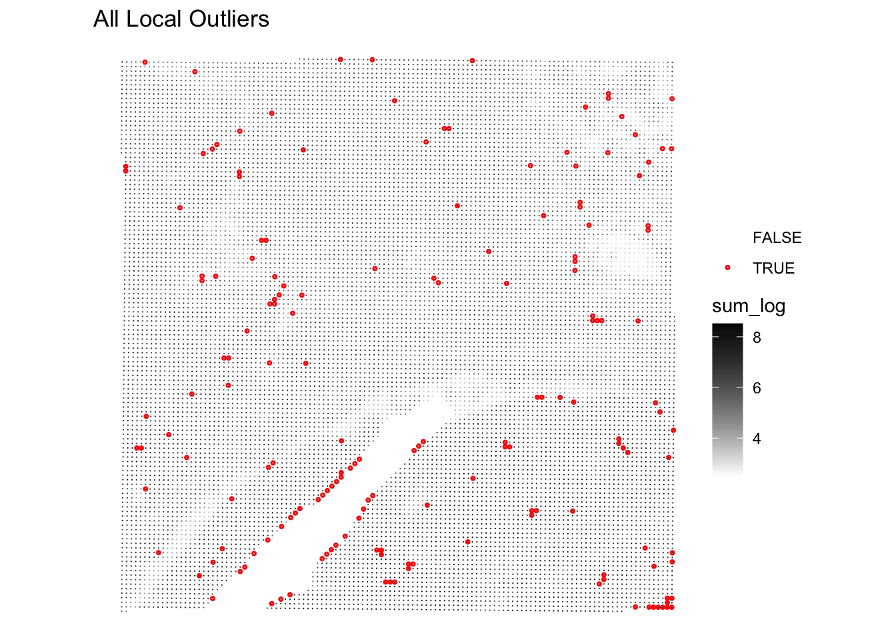
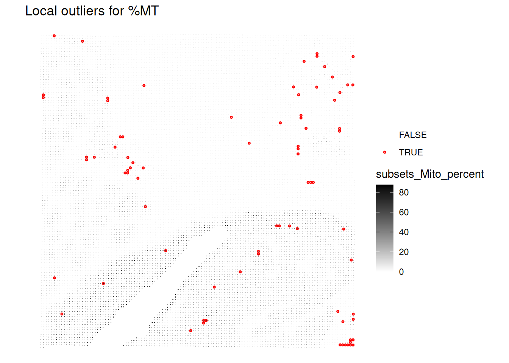
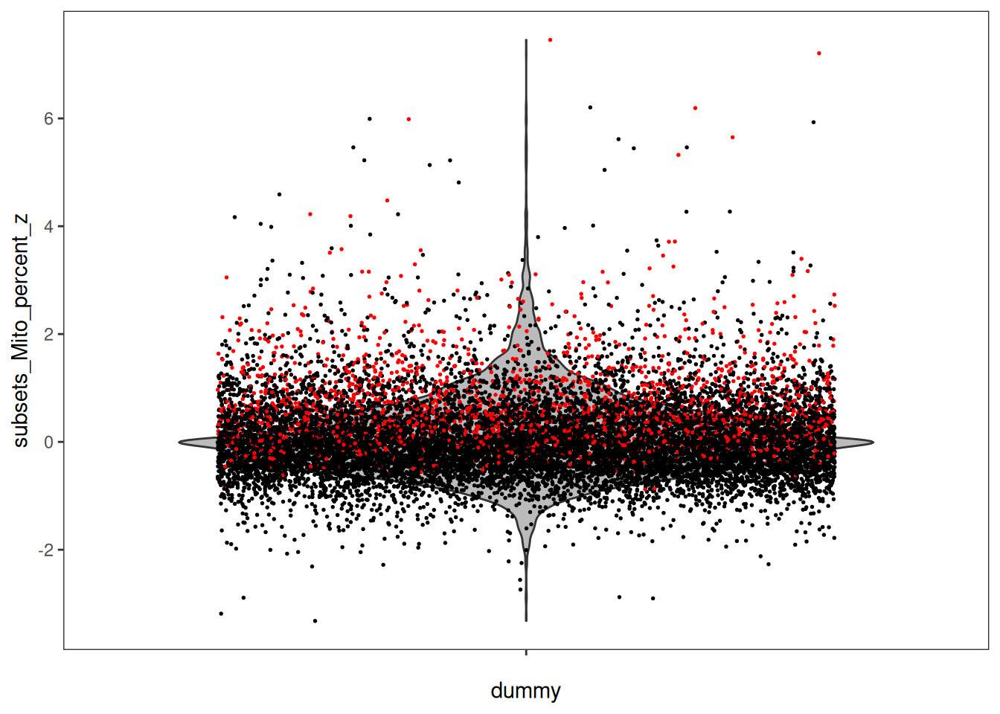
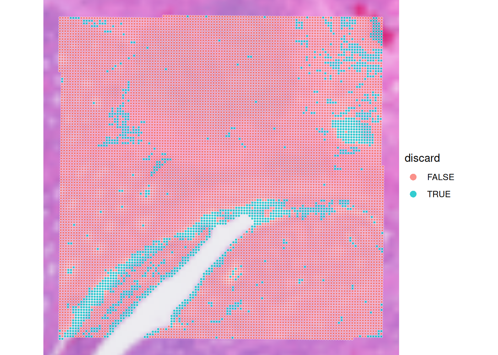
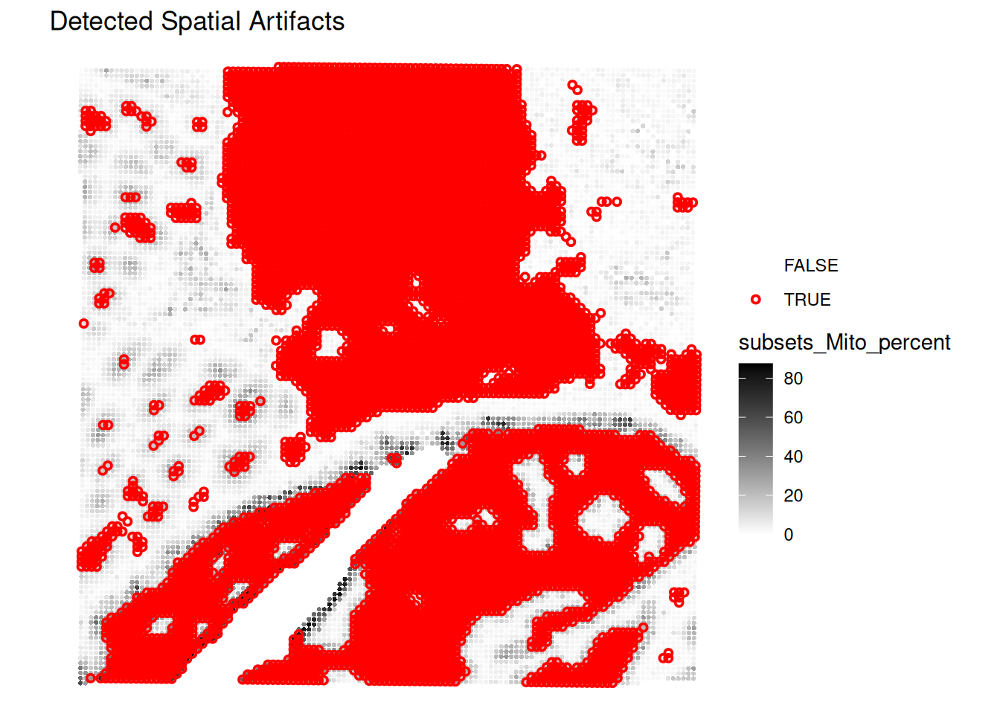

Exercise 2
Quality control at spot-level
In this second exercise, we will focus on the critical step of quality control (QC) for spatial transcriptomics data. This step focuses on removing low-quality spots or technical artifacts from the dataset to avoid biases into downstream analysis.
Learning objectives
By the end of this exercise, you will be able to:
- Calculate per-spot QC metrics.
- Identify local outliers based on various QC metrics.
- Detect spatial artifacts using
SpotSweeper. - Visualize QC metrics and detected artifacts.
Libraries
Calculate QC metrics
We will start by calculating QC metrics that are also commonly used in scRNA-seq data analysis (number of UMI counts per cell, number of detected genes per cell, percentage of UMIs originating from mitochondrial genes). Here these metrics will be calculated per sport, and used to identify low-quality spots.
We will start by loading our SpatialExperiment object, which was saved in the previous exercise, and prepare it for quality control analysis.
# Load the SpatialExperiment object
spe <- loadHDF5SummarizedExperiment(dir="results/day1/", prefix="01.1_spe")
# Identify mitochondrial genes (genes with symbol starting with "MT-")
is.mito <- rownames(spe)[grepl("^MT-", rownames(spe))]Now, we will calculate per-spot QC metrics using the scuttle package. The function addPerCellQCMetrics adds metrics mitochondrial gene percentage to the colData of the SpatialExperiment object.
Run the following code to compute these metrics and inspect the results.
spe <- addPerCellQCMetrics(spe, subsets = list(Mito = is.mito))Check which metadata has been added to colData. Do you recognize the different metrics?
# Display the colData to see the newly added QC metrics.
colData(spe)DataFrame with 14207 rows and 12 columns
barcode in_tissue array_row array_col
<character> <integer> <integer> <integer>
s_016um_00144_00175-1 s_016um_00144_00175-1 1 144 175
s_016um_00204_00145-1 s_016um_00204_00145-1 1 204 145
s_016um_00191_00159-1 s_016um_00191_00159-1 1 191 159
s_016um_00111_00233-1 s_016um_00111_00233-1 1 111 233
s_016um_00202_00235-1 s_016um_00202_00235-1 1 202 235
... ... ... ... ...
s_016um_00217_00238-1 s_016um_00217_00238-1 1 217 238
s_016um_00192_00176-1 s_016um_00192_00176-1 1 192 176
s_016um_00214_00240-1 s_016um_00214_00240-1 1 214 240
s_016um_00193_00227-1 s_016um_00193_00227-1 1 193 227
s_016um_00109_00223-1 s_016um_00109_00223-1 1 109 223
bin_size sample_id sum detected
<character> <character> <numeric> <integer>
s_016um_00144_00175-1 016 sample01 322 202
s_016um_00204_00145-1 016 sample01 253 203
s_016um_00191_00159-1 016 sample01 1546 982
s_016um_00111_00233-1 016 sample01 818 665
s_016um_00202_00235-1 016 sample01 227 195
... ... ... ... ...
s_016um_00217_00238-1 016 sample01 291 246
s_016um_00192_00176-1 016 sample01 626 557
s_016um_00214_00240-1 016 sample01 330 271
s_016um_00193_00227-1 016 sample01 802 684
s_016um_00109_00223-1 016 sample01 1020 794
subsets_Mito_sum subsets_Mito_detected
<numeric> <integer>
s_016um_00144_00175-1 109 10
s_016um_00204_00145-1 37 7
s_016um_00191_00159-1 230 11
s_016um_00111_00233-1 51 8
s_016um_00202_00235-1 7 5
... ... ...
s_016um_00217_00238-1 10 6
s_016um_00192_00176-1 7 6
s_016um_00214_00240-1 10 6
s_016um_00193_00227-1 19 7
s_016um_00109_00223-1 67 10
subsets_Mito_percent total
<numeric> <numeric>
s_016um_00144_00175-1 33.85093 322
s_016um_00204_00145-1 14.62451 253
s_016um_00191_00159-1 14.87710 1546
s_016um_00111_00233-1 6.23472 818
s_016um_00202_00235-1 3.08370 227
... ... ...
s_016um_00217_00238-1 3.43643 291
s_016um_00192_00176-1 1.11821 626
s_016um_00214_00240-1 3.03030 330
s_016um_00193_00227-1 2.36908 802
s_016um_00109_00223-1 6.56863 1020- The
sumcolumn contains the total number of unique molecular identifiers (UMIs) for each spot - The
detectedcolumn contains the number of unique genes detected per spot - The
subsets_mito_percentcontains the percentage of transcripts mapping to mitochondrial genes per spot
Global outlier detection
In order to detect low-quality spots and filter them out, QC methods adapted from scRNA-seq analysis can be applied. A simple option is to apply a fixed (upper or lower-bound) threshold to a metric across all spots, and remove the spots that do not pass the filtering criteria applied.
To set up these threshold we can look for information from 10X and the community, for example https://github.com/10XGenomics/HumanColonCancer_VisiumHD/issues/28. Based on this discussion the authors of the OSTA book wrote (see “Remove bins overlaying empty tissue” section in https://lmweber.org/OSTA/pages/seq-workflow-visium-hd-bin.html#dependencies):
Based on a discussion with the original author at 10x Genomics, in this dataset, 8 µm bins with a library size below 100 are removed. Since we expect a 4-fold increase in library size across all bins at 16 µm, we can set the filtering threshold to 400.
We can also have a look and plot distributions of the values to decide which is the best cutoff:
# Plot library size vs. detected genes
p1 <- ggcells(spe, aes(x=detected, y=sum)) +
geom_point() +
geom_density_2d() +
scale_x_log10() +
scale_y_log10() +
geom_xsidehistogram() +
geom_ysidehistogram() +
geom_vline(xintercept = 300, col="red", lty=2) +
geom_hline(yintercept = 400, col="red", lty=2) +
labs(y="Number of UMIs", x="Number of detected genes") +
ggtitle("Library size vs. detected")
# Plot mito proportion vs. detected genes
p2 <- ggcells(spe, aes(x=detected, y=subsets_Mito_percent)) +
geom_point() +
geom_density_2d() +
scale_x_log10() +
geom_xsidehistogram() +
geom_ysidehistogram() +
geom_vline(xintercept = 300, col="red", lty=2) +
geom_hline(yintercept = 20, col="red", lty=2) +
labs(y="% mitochondrial reads", x="Number of detected genes") +
ggtitle("Mito proportion vs. genes detected")
p1 + p2
And further check how many spots would be removed with the given thresholds:
# Flag spots based on fixed thresholds
spe$qc_lib_size <- spe$sum < 400
spe$qc_detected <- spe$detected < 300
spe$qc_mito_prop <- spe$subsets_Mito_percent > 20
# Tabulate number of spots flagged by each
qc <- grep("^qc", names(colData(spe)))
sapply(colData(spe)[qc], table) qc_lib_size qc_detected qc_mito_prop
FALSE 11021 11263 12148
TRUE 3186 2944 2059What do you think about this intial filtering?
Have a look at the mitochondrial percentage numbers on the tissue section using plotVisium() function. Which spots are more likely to be excluded?
plotVisium(spe, annotate = "subsets_Mito_percent", zoom = TRUE)
Visualize spatial pattern of QC metrics (Global outliers)
Very importantly, we want to have a look into the spatial pattern of using a fixed threshold for QC metrics :
# check spatial pattern of discarded spots
p1 <- plotObsQC(spe,
plot_type="spot", annotate="qc_lib_size") +
ggtitle("Library size (< 400 UMI)")
p2 <- plotObsQC(spe,
plot_type="spot", annotate="qc_detected") +
ggtitle("Detected genes (< 300 genes)")
p3 <- plotObsQC(spe,
plot_type="spot", annotate="qc_mito_prop") +
ggtitle("Mito proportion (> 20%)")
# plot the three together
gridExtra::grid.arrange(p1, p2, p3, ncol=2)
Local Outlier Detection
To avoid discarding whole layers of tissues, another approach to identify low-quality spots is to use local outlier detection methods that take into account the spatial context of each spot.
SpotSweeper package provides functions to identify common QC metrics (such as the ones we have seen in the previous section: library size, number of detected genes, and mitochondrial percentage) and detect local outliers based on these metrics.
We will use localOutliers from SpotSweeper which helps identifying spots that deviate significantly from their local neighborhood.
# Identify local outliers based on library size ("sum" of counts).
# Spots with unusually low library size compared to their neighbors will be flagged.
spe <- localOutliers(spe,
metric = "sum",
direction = "lower",
log = TRUE
)
# Identify local outliers based on the number of unique genes detected ("detected").
# Spots with an unusually low number of detected genes will be flagged.
spe <- localOutliers(spe,
metric = "detected",
direction = "lower",
log = TRUE
)
# Identify local outliers based on the mitochondrial gene percentage.
# Spots with an unusually high mitochondrial percentage will be flagged.
spe <- localOutliers(spe,
metric = "subsets_Mito_percent",
direction = "higher",
log = FALSE
)
# Combine all individual outlier flags into a single "local_outliers" column.
# A spot is considered a local outlier if it's flagged by any of the above metrics.
spe$local_outliers <- as.logical(spe$sum_outliers) |
as.logical(spe$detected_outliers) |
as.logical(spe$subsets_Mito_percent_outliers)How many spots were identified as local outliers based on the combined criteria?
As we have seen before, visualizing the QC metrics is crucial for understanding the quality of your spatial transcriptomics data and for deciding on appropriate filtering strategies, so look at their spatial localization using the plotObsQC function.
What do you think?
# Count the number of spots flagged as local outliers.
table(spe$local_outliers)
FALSE TRUE
14036 171 
Even better, we can visualize the spatial distribution of the local outliers together with the QC metrics, for example plot the spatial distribution of local outliers for mitochondrial percentage.
plotQCmetrics(spe,
metric = "subsets_Mito_percent", outliers = "subsets_Mito_percent_outliers",
point_size = 0.4,
stroke = 0.75
) +
ggtitle("Local outliers for %MT")
Plot the spatial distribution of local outliers for library size and number of detected genes. What do you observe?
# Plot the spatial distribution of local outliers for library size.
plotQCmetrics(spe,
metric = "sum_log", outliers = "sum_outliers", point_size = 0.4,
stroke = 0.75
) +
ggtitle("Local outliers for number of UMIs")
# Plot the spatial distribution of local outliers for number of detected genes.
plotQCmetrics(spe,
metric = "detected_log", outliers = "detected_outliers", point_size = 0.4,
stroke = 0.75
) +
ggtitle("Local outliers for number of UMIs")
Very few spots seem to be flagged as outliers!
We can visualisaze the z-scores from the local outlier detection test, and compare it to the global threshold used earlier. How do you interpret this?
plotObsQC(spe, plot_type = "violin", x_metric = "subsets_Mito_percent_z", annotate = "qc_mito_prop")
Compare and combine global and local outliers and apply filtering
Based on the comparison of global and local outliers, we choose here to adjust the global cutoffs to be less stringent:
Adjust global filtering cutoffs based on previous plots (apply less stringent cutoffs)
# adjust global filtering cutoff
spe$qc_lib_size <- spe$sum < 120
spe$qc_detected <- spe$detected < 100
spe$qc_mito_prop <- spe$subsets_Mito_percent > 35Compare global and local outliers being flagged
spe$global_outliers <- spe$qc_lib_size | spe$qc_detected | spe$qc_mito_prop
p1 <- plotObsQC(spe, plot_type="spot", annotate="global_outliers")
p2 <- plotObsQC(spe, plot_type="spot", annotate="local_outliers")
gridExtra::grid.arrange(p1, p2, ncol=2)
Combine both:
# combine local and global outliers to create a final discard flag
spe$discard <- spe$global_outliers | spe$local_outliersVisualise the spots that will be discarded based on the combined criteria. How many spots will be removed?
# check how many spots will be discarded
table(spe$discard)
FALSE TRUE
12615 1592 # have a final look to the spots that we will discard
plotVisium(spe, zoom=T, annotate="discard")
Technical artifacts
Technical artifacts can arise during tissue preparation, for example tissue dissection can cause mechanical damage, leading to large areas with artificially low biological heterogeneity. These can be detected with the findArtifacts function of the spotSweeper package.
# find artifacts using SpotSweeper
spe <- findArtifacts(spe,
mito_percent = "subsets_Mito_percent",
mito_sum = "subsets_Mito_sum",
n_order = 5,
name = "artifact"
)What is the findArtifacts function performing and what are the (potentially problematic) assumptions?
Plot the spatial distribution of the artifact column identified by SpotSweeper. What do you observe?
# Plot the spatial distribution of the detected artifacts.
plotQCmetrics(spe,
metric = "subsets_Mito_percent", # You can choose any relevant metric to display
outliers = "artifact",
point_size = 1.1
) +
ggtitle("Detected Spatial Artifacts")
Filtering
We decide to filter out the low-quality spots from the SpatialExperiment object based on the combined criteria of global thresholds and local outliers. Additionally, we will remove any features (genes) that have zero counts across all remaining spots.
# remove the spots considered of low quality based on both global and local metrics
spe <- spe[, !spe$discard]
# remove features with all 0 counts
spe <- spe[rowSums(counts(spe)) > 0, ]What is the size of the dataset after filtering?
Save the object
Save the filtered SpatialExperiment object for the next steps:
saveHDF5SummarizedExperiment(spe, dir="results/day1", prefix="01.2_spe", replace=TRUE,
chunkdim=NULL, level=NULL, as.sparse=NA,
verbose=NA)Clear your environment:
Key Takeaways:
-
scuttle::addPerCellQCMetricsprovides essential per-spot QC metrics. -
SpotSweeper::localOutliershelps identify individual problematic spots. -
SpotSweeper::findArtifactsis powerful for detecting spatially coherent regions of poor quality. - Visualizing QC results is critical for data interpretation and downstream analysis decisions.